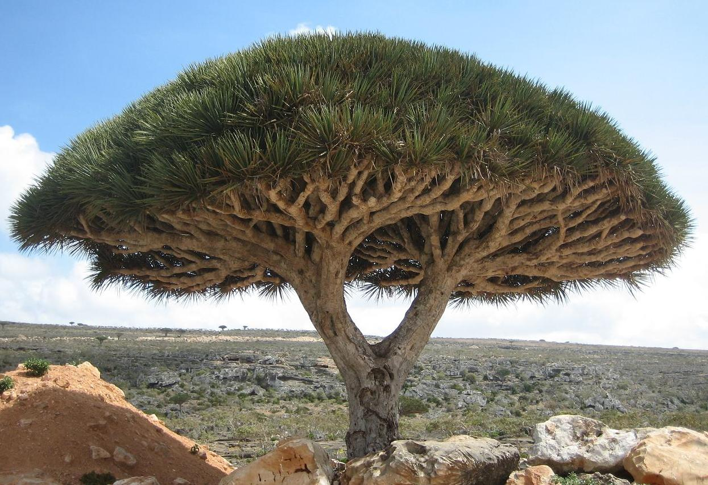

YEMEN
Yemenis are mainly of Arab origin.
| The Republic of Yemen is an Arab country occupying the southwestern to southern end of the Arabian Peninsula. It is bordered by Saudi Arabia to the north, the Red Sea to the west, the Gulf of Aden and Arabian Sea to the south and Oman to the north-east. |
|
Arsh Bilqis (Yemen) the Throne of the Queen of Sheba is the second most important temple in Marib. A line of five elegant symmetrical pillars, also known as the Almaqah or Moon Temple, was built towards the end of the eighth century BC |
|
| The Dar al-Hajar"Stone House" or "Rock Palace") is a former royal palace located in Wadi Dhar. Built in 1920. |
 |
Al-Saleh Mosque is a modern mosque in Sana'a that is the largest in Yemen. It lies in the southern outskirts of the city, south of the Al Sabeen Maternal Hospital. Originally named "Al Saleh Mosque", it was inaugurated in November 2008 by Yemeni President Ali Abdullah Saleh.[ |
|
| Bab al-Yemen is the entrance to Sanaa, Yemen’s old city “Less than 50 years ago, the walls that meet at Bab al-Yemen encompassed all of Sanaa, then a city of just tens of thousands and more medieval than modern,” |
|
Dracaena cinnabari, the Socotra dragon tree or dragon blood tree, is a dragon tree native to the Socotra archipelago, part of Yemen, located in the Arabian Sea. It is named after the blood-like color of the red sap that the trees produce. It is considered the national tree of Yemen. |
 |